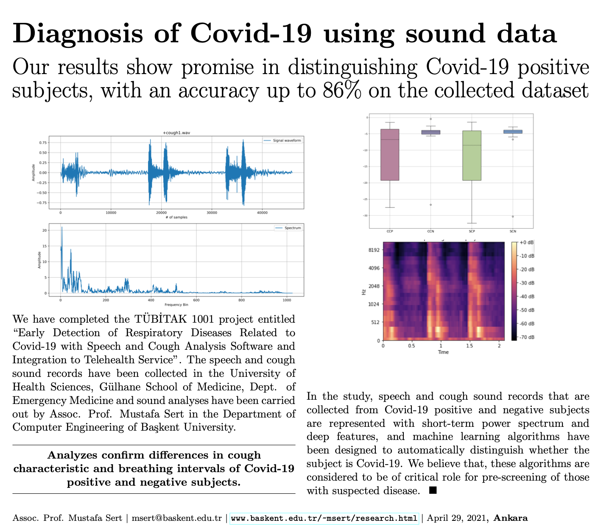

Early Detection of Respiratory Diseases Related to COVID-19
Early detection of respiratory diseases related to COVID-19 using speech and cough analysis software, with integration into telehealth services. The project focused on machine learning-based audio analysis for health-related applications.